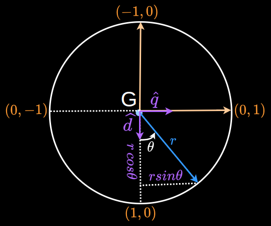
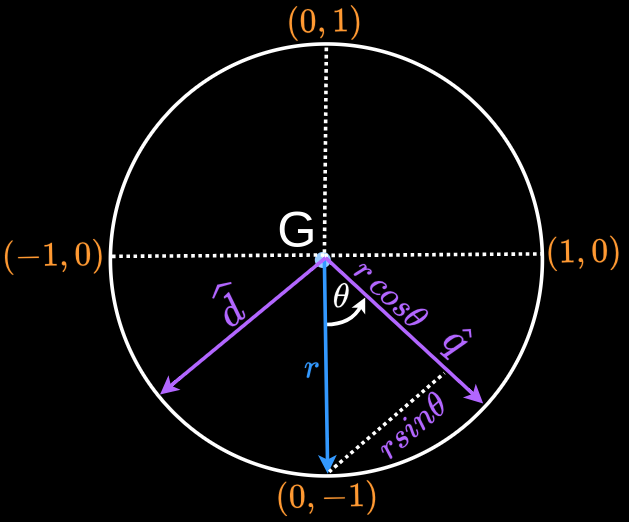

Simple pendulum: Force due to gravity
Overview
Force due to gravity acting on a pendulum is divided into 2:- Component acting along the string $(F^{\scriptsize{G}}_g)\,\hat{d}$
- Component acting tangential and opposite to the direction of motion of the mass $(F^{\scriptsize{G}}_g)\,\hat{q}$ [Ref]

A along $\hat{k}$:
$$
\newcommand{\wrt}[4]{^{\scriptsize{#1}\hspace{-#2em}}{#3}^{\scriptsize{#4}}}
|M^{\scriptsize{A}}_g| = -m_{\scriptsize{p}} g \,sin\theta \cdot l
$$
Comparison to a unit circle
Consider a unit circle. Each ($x,y$) coordinate is given as ($cos\theta, sin\theta$). The radius vector rotates and keeps changing its direction but the body $d,q$ reference frame remains fixed.
A sine function is defined in such a way that $sin(60^0) = sin(120^0)$.

In the pendulum case, the body reference frame rotates but the direction of the radius (gravity) vector remains fixed.
Each ($x,y$) coordinate on the unit circle is given as $(sin\theta, cos\theta)$. The definition of $x=sin\theta$ matches the physical behaviour of the $\hat{d}$ component of the gravity vector at various points. The redefnition of $\theta$ as well aligns with the physical behaviour.
